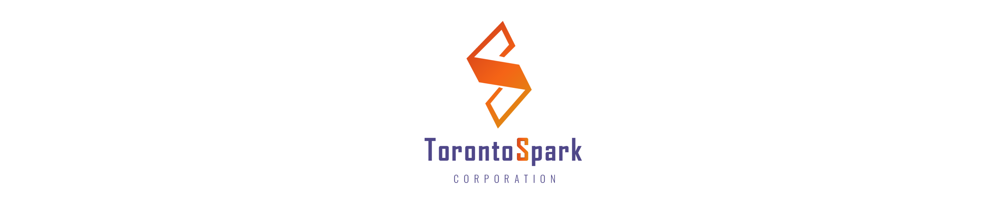
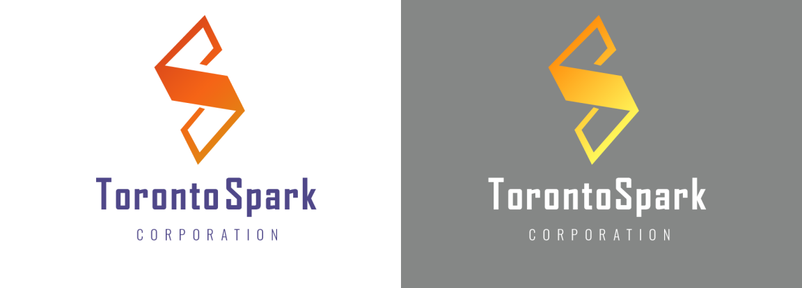
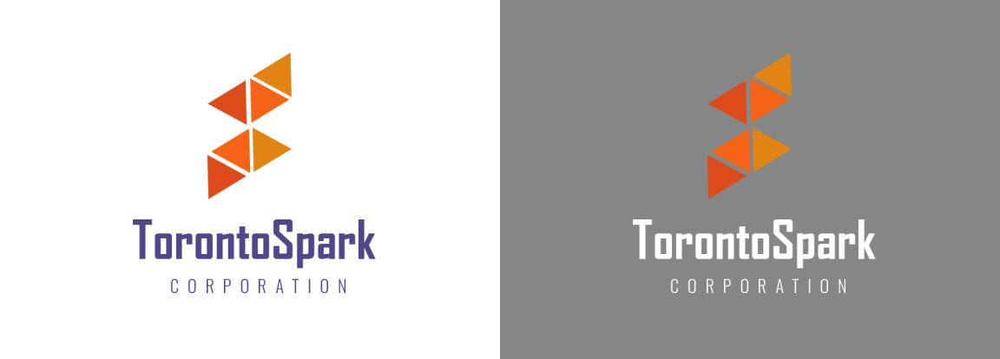

<div id="portfolio-page" class="portfolio-page-content">
    <div class="portfolio-page-wrapper">
        <div class="portfolio-page-nav">
            <div class="nav-item portfolio-page-prev-next">
                <a class="ajax-page-load" href="portfolio-project-7.html"><i class="lnr lnr-chevron-left"></i></a>
                <a class="ajax-page-load" href="portfolio-project-1.html"><i class="lnr lnr-chevron-right"></i></a>
            </div>
            <div class="nav-item portfolio-page-close-button">
                <a id="portfolio-page-close-button" href="#"><i class="lnr lnr-cross"></i></a>
            </div>
        </div>

        <div class="portfolio-page-title">
            <div>
                <h1>TorontoSpark Logo Design</h1>
                <h5>Igniting Creativity with Design and Color</h5>
            </div>
        </div>
        <div class="hero">
            
        </div>

        <div class="project-overview olcms">
            <div class="project-overview-row">
                <h2>Design Brief</h2>
                <p>Toronto Spark, an innovative startup, approached us with a vision to create a logo that would encapsulate their brand's essence—sparking creativity, energy, and a sense of design. They sought a visual identity that would set them apart in a competitive landscape.</p>
            </div>
        </div>

        <div class="design-process">
            <h2>Design Concept</h2>
            <div class="logo-design-row">
                <div class="logo-design-idea">
                    <h4>IDEA 1: The Sparking "S"</h4>
                    <p>The focal point of the first logo concept is a prominent, artfully designed letter "S" positioned at the top. This "S" was crafted with distinct edges and hollows to convey a sense of design, echoing the idea of a spark. To further emphasize the spark concept, a vibrant gradient spanning from red to orange was chosen to adorn the "S." This gradient represents the progression of an idea from inception (red) to full realization and vibrancy (orange).</p>
                    
                </div>
                <div class="logo-design-idea">
                    <h4>IDEA 2: Geometry and Innovation</h4>
                    <p>The letter "S" was constructed using six equilateral triangles, symbolizing precision, innovation, and the interconnectedness of ideas. While this design resonated with the theme of innovation, our collaborative discussions with the client led to the preference for the first concept, which placed a stronger emphasis on the letter "S" to reinforce the idea of sparking creativity and energy.</p>
                    
                </div>
            </div>
        </div>
        <!--            <div class="design-process-full-width">-->
        <!--                <div class="high-fi-wireframe">-->
        <!--                    -->
        <!--                </div>-->
        <!--            </div>-->


        <div class="conclusion_olcms">
            <div class="conclusion_olcms-row">
                <h2>Final design</h2>
                
                <h3>Design Change</h3>
                <p>To accentuate the letter 'S' and emphasize its importance, I reimagined it within the company name at the bottom of the logo. This transformation involved a shift to a bold, eye-catching shade of orange. This change not only made the 'S' a prominent focal point but also symbolized Toronto Spark's dedication to standing out, sparking innovation, and making a lasting impression in the startup world.</p>
                <h3>Final choice</h3>
                <p>Our design journey with Toronto Spark was marked by a series of iterations and client feedback. While both concepts showcased the potential for a strong visual identity, the client ultimately chose the first version. They wanted to place a strong emphasis on the letter "S" to reinforce the idea of sparking creativity and energy.</p>
            </div>
        </div>


        <!--            <div class="col-sm-4 col-md-4 portfolio-block">-->
        <!--                &lt;!&ndash; Project Description &ndash;&gt;-->
        <!--                <div class="project-description">-->
        <!--                    <div class="block-title">-->
        <!--                        <h3>Description</h3>-->
        <!--                    </div>-->
        <!--                    <ul class="project-general-info">-->
        <!--                        <li><p><i class="lnr lnr-user"></i> Alex Smith</p></li>-->
        <!--                        <li><p><i class="lnr lnr-link"></i> <a href="#" target="_blank">www.project-site.com</a></p></li>-->
        <!--                        <li><p><i class="lnr lnr-calendar-full"></i> 25 april, 2021</p></li>-->
        <!--                    </ul>-->

        <!--                    <p class="text-justify">Aliquam euismod aliquam massa, quis eleifend dui sodales vitae. Interdum et malesuada fames ac ante ipsum primis in faucibus.</p>-->
        <!--                    &lt;!&ndash; /Project Description &ndash;&gt;-->

        <!--                    &lt;!&ndash; Technology &ndash;&gt;-->
        <!--                    <div class="tags-block">-->
        <!--                        <div class="block-title">-->
        <!--                            <h3>Technology</h3>-->
        <!--                        </div>-->
        <!--                        <ul class="tags">-->
        <!--                            <li><a>HTML5</a></li>-->
        <!--                            <li><a>CSS3</a></li>-->
        <!--                            <li><a>jQuery</a></li>-->
        <!--                            <li><a>Ajax</a></li>-->
        <!--                            <li><a>PHP5</a></li>-->
        <!--                        </ul>-->
        <!--                    </div>-->
        <!--                    &lt;!&ndash; /Technology &ndash;&gt;-->

        <!--                    &lt;!&ndash; Share Buttons &ndash;&gt;-->
        <!--                    <div class="share-buttons">-->
        <!--                        <div class="block-title">-->
        <!--                            <h3>Share</h3>-->
        <!--                        </div>-->
        <!--                        <div class="share-buttons-block">-->
        <!--                            <a href="#" target="_blank" class="btn"><i class="fab fa-facebook-f"></i> </a>-->
        <!--                            <a href="#" target="_blank" class="btn"><i class="fab fa-twitter"></i> </a>-->
        <!--                            <a href="#" target="_blank" class="btn"><i class="fab fa-dribbble"></i> </a>-->
        <!--                        </div>-->
        <!--                    </div>-->
        <!--                    &lt;!&ndash; /Share Buttons &ndash;&gt;-->
        <!--                </div>-->
        <!--                &lt;!&ndash; Project Description &ndash;&gt;-->
        <!--            </div>-->

        <div class="project-page-footer">
            <p>© 2023 Yumao Chen</p>
        </div>
    </div>
</div>